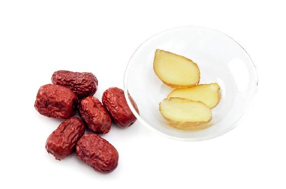
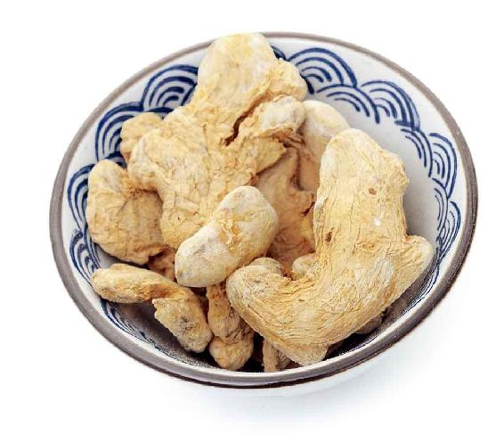
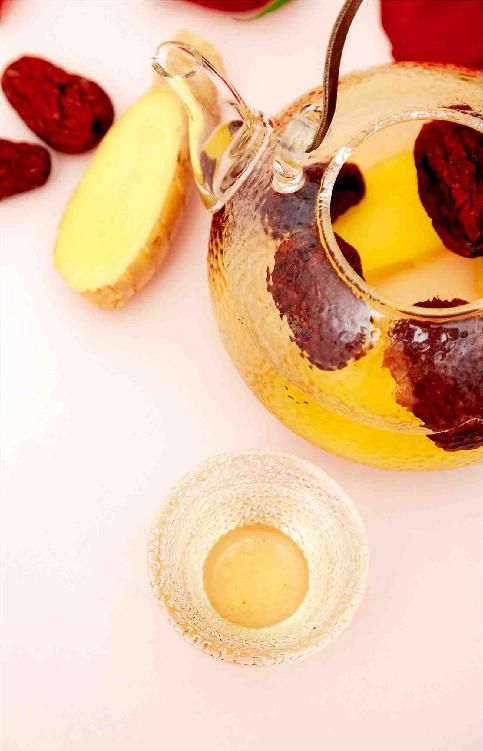
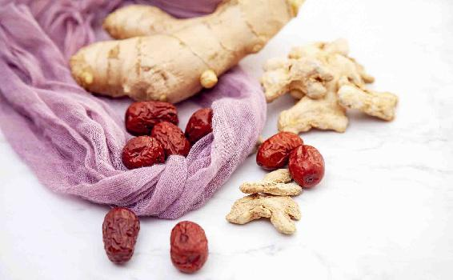

立夏了，又到了一年一度喝神仙姜枣茶的时间。
每年从立夏到三伏，要喝姜枣茶——这个养生法，2008年我写出来以后，许多人从一开始的惊奇，到体会功效之后的惊喜，并传抄到网络上，一传十，十传百。如今，夏季喝姜枣茶逐渐成为一种普遍的养生习惯。可以说这是我的节气养生方中传播最广的一个。

很多老读者是从看我的《回家吃饭的智慧》这本书开始，甚至从看我早期的博客文章开始,就养成了每年夏天喝姜枣茶的习惯，并感受到它神奇的效果，到现在，不少人已经坚持十年以上了。
的确，如果您喝过一个夏天的姜枣茶，第二年一定会想着再喝。其实，并不是我的方法神奇——我只是研究了喝姜枣茶的最佳时令。
姜和枣二者的搭配，看起来平常，却有着神奇的效果，它源自医圣张仲景的经典——《伤寒杂病论》。
张仲景的《伤寒杂病论》共有113个药方，其中35个药方中，都用到了生姜和大枣。主要是利用姜、枣的搭配来健脾护胃、补中益气，提高人体的抗病能力和自愈能力。
比如“桂枝汤”，被尊为古今“群方之首”“调理阴阳第一方”，总共五味药，其中两味是生姜和大枣。
医界流传“桂枝汤加减治万病”，它的主要作用就是调节阴阳平衡，促进气血畅通。以桂枝（肉桂）、甘草、白芍配上姜、枣，功效不凡。
在张仲景的经方中，加入姜、枣是对其他药的辅佐。我们平时保健可以单独喝姜、枣。虽然它们是两样家常食物，但如果喝对了时间、喝对了方法，效果就会像众多朋友实践后分享的那样奇妙。
读者评论：
勤劳的小蜜蜂：2014年第一次喝姜枣茶，两个月瘦了10千克，感觉整个人都清爽了，还显年轻！
柜柜和碗碗：去年喝了姜枣茶后，秋冬季的感冒几乎没有了，老公的痛风也很少发作了。
蓝弧：自从去年听了陈老师的课，我买来《回家吃饭的智慧》等一系列书籍，一口气看完，受益非常大！去年立夏跟着老师喝姜枣茶，我发现每次经前都会出现的痘痘不见了！
每年从交立夏节气当天开始喝姜枣茶，一直喝到三伏的前一天为止——这就是我给大家建议的姜枣茶养生法。
姜枣茶的食材非常简单，就是生姜和大枣。您别小瞧了生姜和大枣，把它们组合在一起运用，是古人的饮食智慧。古人们追求的并不是很复杂的东西，而是尽量用家常食材组合出神奇的方子，以达到大道至简的目的。
由于越来越多的朋友开始喝姜枣茶养生，其中，有的人忙得没时间煮茶，有的人想给老年人、小孩喝，等等。根据大家不同的需求，我把姜枣茶方变化出了三种方法，您可以根据自己的情况来选择使用。
读者评论：喝完姜枣茶，整个身体如同被阳光熏过
清茶薄暮_gm：终于又盼来了喝姜枣茶的时间，自从喝了姜枣茶，下巴就没再长痘了，很喜欢，喝了很舒服，谢谢陈老师。
婉儿_wo：姜枣茶用焖烧杯闷两小时，喝完整个身体如同被阳光熏过，非常舒服。喜欢！感谢老师，我现在痘痘也不长了，真开心。
玉兔_vu：老师，每天喝完姜栆茶，整个人感觉很舒服，别人说热得要死，我自己感觉不是那么热，姜枣茶的功效太不可思议了。
弱水_xh：今年夏天开始喝姜枣茶，正遇经期，也是哺乳期，加了红糖，胃很舒服。准备明天换加蜂蜜。谢谢陈老师！
生姜可以用鲜姜，记住一定是带皮的；大枣最好是用小一点的，不要用那种个头特别大的，因为我们主要用的是红枣皮的功效。
准备工作：
1.在一个洗菜盆里先放一点面粉，加清水把它搅匀。
2.把整块生姜放进去泡洗10分钟，去除表面的污垢。
3.生姜连皮一起切下三大片。红枣洗干净，掰成两半。

把红枣和姜片加冷水下锅，煮开后转中火再煮10分钟以上，最好是煮40分钟，倒入保温杯里，就可以带出门了。喝完后，可以用开水再冲泡1〜2次。
上班族比较忙，没时间在家里煮姜枣茶，那就可以用泡茶的方法来做。
早上把带皮的生姜切成薄片，用保鲜膜包好，带到办公室，放入保温杯，再加入掰开的红枣，然后用沸水冲泡就可以了。
注意要盖上盖子多闷一会儿，最好是闷二三十分钟，让姜和枣充分地出味儿。姜枣茶可以反复冲泡。
这个方法适合在家里做，也适合早上有条件煮粥做早餐的朋友。煮姜枣粥的时候，生姜可以不用切成片，用菜刀直接拍扁。
以一家三口为例，您可用1块生姜、18个掰开的大枣来熬粥。生姜、大枣要跟大米一起下锅，熬的时间最好是一小时以上。
如果您喜欢熬杂粮粥，把米换成杂粮就可以，方法是一样的。
有些朋友可能没有时间处理生姜，比如，出门在外时，我建议您可以用晒干的姜片，但量要相应地减少，因为晒干的姜片比生姜的热性更重。
干姜片也可选用南方的小黄姜来制作。
小黄姜跟北方的大白姜不一样，个头要小很多，切开以后姜肉鲜黄，闻起来有很浓郁的辛香，还有微辣的花香，芳香开窍的作用更强，还有保肝的作用。
小黄姜切成的小姜片用三片，两三克足够了。
鲜姜和干姜相比，鲜姜相对要温和一些，干姜暖胃的作用更强，您可以根据自己的体质选择使用。
读者评论：姜枣茶的功效太不可思议了
玉兔_vu：每天喝完姜栆茶整个人感觉很舒服，别人都说热，我自己却感觉不是那么热，姜枣茶的功效太不可思议了。
孙瑞_vf：立夏后每天都喝姜枣茶，手脚感觉不那么凉了。一开始家里人半信半疑地喝姜枣茶，现在天天都主动喝了。
如果孩子经常吃各种糖果、雪糕、冰激凌等零食、冷饮；孩子挑食，经常胃口不好，吃得不多，吃一点儿就说饱了，过不了多久又饿了；孩子瘦弱、脸色青白，有时还喊肚子疼，但是又查不出什么病；有以上任何一条情况，都可以喝姜枣茶。
姜枣茶

允斌叮嘱：
1.瘦弱的孩子，加麦芽糖一起喝，也就是“姜枣饴糖水”。
2.体内有湿有寒的胖人喝姜枣茶会变瘦；而瘦弱的人喝姜枣饴糖水，能健脾开胃、长肉。
3. 正常的孩子，平时不需要喝姜枣茶。7岁以上的孩子，在立夏到三伏期间，可以跟大人一起喝。适宜和不适宜的情况，与成年人相同。
4.孩子发高热时，暂不喝，等病好了再喝。
5.孩子喝姜枣茶后，如果出汗较多，可以加罗汉果一起煮。
经常有痰、易感冒，加陈皮；
脾气急，加玫瑰；
便秘，加牛蒡；
虚胖、汗多、爱上火，加罗汉果；
瘦弱、面色青白，加麦芽糖；
有胃热、上火的孩子，不用麦芽糖，用蜂蜜（三岁以下不用蜂蜜）。
读者调理案例
@花溪：我家有两个孩子，平时都是靠陈老师的食方调理小问题，几乎从来没有去过医院。天气一热孩子不爱吃饭，我早早地准备好了姜枣茶给他们喝。做法很简单，枣子、生姜在锅里煮一下，放一点麦芽糖，晾温了给他们喝。孩子喝了两三天就食欲大增，一放学回来就喊饿，吃饭也不挑食了。我用老师的方子，家常便饭就能调理好孩子的身体，何乐而不为呢？
@荷叶青青：我真正感觉到姜枣饴糖水的好。推荐给朋友的孩子喝，朋友说孩子喝了4次，胃口大开了。谢谢陈老师！
@佚名：姑妈的小孙女不吃饭、没精神、脸色苍白，医生开了药，孩子一吃就大哭大闹。我给她分享了老师的姜枣饴糖水，让她试试，没过几天她就说孩子好了。她用养生壶天天煮一壶，早晚各喝一碗，现在孩子活蹦乱跳的，还爱吃饭了。早上刚吃了两个鸡蛋，把她高兴坏了，一定让我谢谢陈老师。
姜枣茶有些辣，如果想调味可以加糖。合理选择，还能增加功效。
女性：加红糖
气血虚的女性，用姜枣茶加上红糖，暖血补血，对缓解痛经也有帮助，还可以调理女性手脚冰凉、月经推迟等症状。
男性：加蜂蜜
有内热的人或男性，可以加蜂蜜饮用。
儿童：加麦芽糖
麦芽糖是最适合小孩的糖。姜枣茶加上麦芽糖，就是我的另一个食方——姜枣饴糖水。它可以调理儿童脾胃虚寒、面黄肌瘦、食欲不振。
糖尿病人：加罗汉果甜味料
罗汉果含有天然的甜味剂，提取出来可以做成代糖，样子跟白砂糖一样，吃起来口感也一样，却不是蔗糖，不含热量，糖尿病人可以放心吃。
有些朋友看别人喝姜枣茶效果好，对照症状觉得自己也很需要喝，可是喝了又上火，这是为什么呢？
很多朋友把身体的各种反应都归结为吃了热性的东西“上火”。其实多数时候是寒引起的“虚火”，或是气郁引起的“肝火”。
如果上火怎么办？
春天要做好排毒养肝的功课
有些人喝姜枣茶上火，并不是因为他们内热有多重。甚至不少体质虚寒的朋友喝姜枣茶，一开始也会上火。原因在于，春天的时候，身体的排毒工作没做好，没有祛陈寒，没有清肝，没有打开身体“气的通道”，于是气便郁在体内，而气有余便是火，就很容易上虚火。
所以说，顺时生活的要点就是有先后次第。如果春天养得好，夏天喝姜枣茶，就不易上火。
您不妨把春天的养生功课往后延长一周，喝几天荠菜水祛一下陈寒，同时喝几天舒肝解郁茶，再来喝姜枣茶。
喝的时候，可以加入1个陈皮、12朵玫瑰花，这样更不容易上肝火。
读者调理案例：
@懿孺：去年喝姜枣茶，一喝就上火及失眠。（今年）我喝了7天荠菜水，今天第一次喝姜枣茶（加了花椒），感觉很舒服。
@小益：从立夏以来开始喝姜枣水，每天精神好，头脑不像以前昏昏欲睡。推荐给同事喝，同事说喝了之后，精神饱满，以前别人说什么，脑袋不反应。她喝有些上火，我叫她加了陈皮，一下效果很好，说脑袋很清晰，不像以前，人家说什么反应不过来，一到下午就想睡。
身体有顽疾，要耐心坚持顺时调理
有些读者留言，说了解我的节气养生法是从看到姜枣茶这个方子开始的。第一年尝试喝了，出现各种上火症状，不得不放弃。而第二年或第三年再次尝试，却奇迹般地受用了，效果很好。不知道是为什么。
其实这多半是因为，刚接触姜枣茶的人，之前没有顺时调养，所以喝姜枣茶会有些反应。而经过一两年的顺时饮食，春天养好了，到夏天喝姜枣茶，就事半功倍。
特别是一些身体有顽疾的人，要有耐心坚持调理。

读者调理案例
随缘：分享一下我的身体变化：去年喝姜枣茶之后，上火情况明显，手掌湿疹非常严重，又痒又疼，无奈只好放弃了。
今年的姜枣茶已经喝了半个月了，一开始的时候手掌出现湿疹，但是不严重，我不甘心放弃，试探着喝。一份姜枣茶煮两壶，两天喝完，这几天发现湿疹居然慢慢退去了。大爱老师，一年的顺时生活终于让身体有了好转。
允斌点评：
去年湿气重，有湿疹的人在换季时容易发病。这位朋友的湿疹退去并不是几壶姜枣茶的功劳，而是坚持一年顺时生活，顺时调理收到的整体效果。
湿疹体质的人，喝姜枣茶可以搭配果菊清饮（罗汉果、菊花、鱼腥草）。
湿气重、肥胖，或怕上火的人，加枸杞、牛蒡、罗汉果
有湿热的人，喝姜枣茶可以加入祛湿热的食材。
如果您在春季有过发热、扁桃体红肿、咽痛、眼睛发红、便秘、痰黄、牙痛等情况，那么夏天喝姜枣茶时，可以加一个罗汉果和20克牛蒡一起来煮。
罗汉果能清肺热、补肾气；牛蒡则在消肿解毒方面功效强大，不仅能消咽喉肿痛、痘痘等，科学家们对于它抗癌、抗肿瘤的作用也十分推崇。
读者调理案例
@轻舟：我是去年开始喝姜枣茶的，最大的收获就是小肚腩没有了。姜枣茶里面加几粒牛蒡和枸杞，煮1小时，我喝了也不上火。
@夏瑾：喝了一段时间的姜枣茶，发现困扰我半年多的头皮瘙痒、头屑多的症状，不知不觉中好了，在这之前一直用洗护用品也没见起作用。我属于有点阴虚、易上火体质，所以从一开始姜枣茶里面就加了罗汉果和牛蒡、花椒，下午喝鱼腥草水。坚持顺时生活，总能在不经意中收获小惊喜，谢谢陈老师！
@fyi：刚开始喝姜枣茶放的是红糖，喝几天后下巴冒痘痘，不知是上火还是排毒、湿。后改为罗汉果一起煮，口感非常好，痘痘也消失了。
特别要和大家分享的是：喝姜枣茶排大便非常顺畅，而且很有规律，解除了长期便秘的痛苦。
允斌点评：
巴长痘往往是下焦有湿，喝姜枣茶可以配罗汉果。便秘的人加上牛蒡，排毒效果更好。
如果您错过了春天的某些养生功课，那就不要再错过接下来夏天的养生时机。在夏天的前两个月，我们养生的重中之重就是喝神仙姜枣茶。
我的这道茶方跟我们平时感冒喝的姜汤不一样，也不是用生姜、大枣泡个水喝那么简单，它的做法、喝法都有一些讲究，所以得名为“神仙姜枣茶”，这是喜欢的人对它的美称。
喝姜枣茶有九个注意事项。
姜枣茶暖脾胃的效果非常好，如果凉着喝，对脾胃有不好的刺激，会减弱它的功效。
因为早吃姜是补药汤，而午吃姜和晚吃姜对身体不好，所以，这道茶过了中午就不要再喝了。
姜枣茶初夏和仲夏可以喝，到了入伏的时候，就要停喝了。
因为入伏以后天气非常炎热，而且是湿热，我们的身体会出很多汗，这时候再喝姜枣茶，身体就会出更多的汗，那样就容易伤到心脏。
有两种情况例外：就是长时间待在冷气房间的人，吃很多冰饮的人，入伏后仍可以喝姜枣茶。
对于普通体质的人来说，姜枣茶只需要在夏天的前两个月喝就行，除非您脾胃非常虚寒，需要常年调理，那您可以一直喝。
如果您不是脾胃虚寒，也不血寒，不用一年四季每天都喝姜枣茶，特别是到了秋冬季以后，更不建议您喝姜枣茶，容易上火。搭配食方是可以用的。
内热重的朋友，会经常上火、口舌生疮、咽喉肿痛等，我建议您最好不要喝姜枣茶。
不过，有些朋友喝姜枣茶上火，甚至有些体质虚寒的朋友喝姜枣茶，一开始也会上火，并不是因为他们内热有多重。而是因为，春天的时候，身体的排毒工作没做好，没给身体充分地排毒，没有清肝，也没有打开身体气的通道，于是气便瘀滞在体内，气有余便是火，很容易变成虚火。
如果您喝姜枣茶上火了，那就要分辨一下自己到底是内热非常重引起的，还是因为身体内有毒、有气郁造成的。
如果是春天的排毒工作没做好，或是由气郁造成的虚火，那您不妨把春天的养生功课再往后延长一周，先清清肝、排排毒，再来喝姜枣茶。
在湿疹、日光性皮炎急性发作的时候，暂时不要喝姜枣茶，等急性期过了再喝。
女性在孕晚期的时候，身体有内热，这时候要吃一些凉性的食物来清热；而在孕中期可以适当喝一点儿；孕早期，也就是怀孕三个月以内的女性，您可以咨询医生。
怀孕期间，任何的饮食都要谨慎，要适合自己的体质才可以。
一般来说，女性在生理期，我不建议多喝姜枣茶，因为姜枣茶的活血作用比较强。特别是月经超量的人，更不要在生理期喝姜枣茶。
如果您觉得月经有点不通畅，经量过少，痛经，可以适当地喝一点姜枣茶来帮助排出经血，加上红糖更好。
在伤口没有愈合的时候喝姜枣茶，会影响伤口的愈合。
有些朋友总觉得自己喝口水都会胖，其实这不是胖，而是多余的水分停留在体内造成的水肿。这样的朋友只需喝上一个星期的姜枣茶，体内多余的水分便会排出去，慢慢身材就会变苗条了。
生姜和大枣是中医方子里常用的一对搭档，是用来调和脾胃功能的。
特别是在感冒后，很多人一般都会感觉恶心、呕吐，没胃口，这是脾胃失调的信号，这时候喝姜枣茶就可以缓解。
姜枣茶对于小孩子的脾胃也有很好的保健效果。
喝一段时间的姜枣茶后，身体对于各种病毒的抵抗力会增强，不容易生病。
很多人以为脸上长痘痘是因为上火，其实，如果痘痘只是在下巴上长，尤其是中年女性，那就说明您身体的下焦，也就是肾脏和膀胱系统有寒气，是气血不足的一种表现，并不是身体上火。
喝姜枣茶，就是用姜把身体下焦的寒气给驱赶出去，用枣来补气血，因此经常喝姜枣茶可以调身体的气血，避免下巴长痘痘。
如果湿气盘踞在下身部位非常顽固，且已经造成妇科的各种问题了，可以在姜枣茶里加7粒花椒一起煮，这是我的一个名叫“汉宫椒枣茶”的茶方。
花椒是一种很好的能够帮助我们祛湿的食材。它有三大保健功效：祛湿气、通气、暖宫。
汉宫椒枣茶，平时受凉后腹痛（比如女性经期沾凉水后腹痛）也可以喝。
吃生冷瓜果导致水泻，用姜枣茶与绿茶一起泡着喝，可以止泻。
做法：煮姜枣茶的时间不要超过10分钟。不妨再切一点儿姜丝，然后跟绿茶一起再用姜枣茶的水来冲泡，这样可以加强止泻的效果。
做法：蒲公英根20克，与姜枣茶一起冲泡饮用。
蒲公英根是蒲公英最好的部分，药王孙思邈称赞它有“神效”。
蒲公英根的功效：清毒、抗炎、强肾、消肿散结、抗肿瘤，常用于慢性胆囊炎、慢性胃炎、胃溃疡、慢性肝炎等日常保健及肿瘤预防。
读者评论：每年最期待的就是喝姜枣茶
Samie_le：老师，您好！喝了一个月的姜枣茶，感觉自己精神了，一直以来的胃胀有了很好的缓解，瘦弱的身体也长胖了些，真是意外的惊喜，非常感谢您！
娇_yp：除了去年我怀孕生孩子，我每年都喝。整个秋冬季真的没有感冒过，跟着老师养生，现在身体很棒。都已准备好材料了，今年继续。
一丹_k：每年最期待的就是喝姜枣茶，吃核桃壳煮鸡蛋。夏天喝完姜枣茶，秋冬不容易感冒，效果特别棒！去年事情很多，没有坚持喝姜枣茶，结果冬天感冒了，纸巾都不够用，今年一定要喝起来！
微添添：老师，今年喝了姜枣茶后，前几年端午以后手上会出小水泡或蜕皮，现在都改善了，感恩陈老师！
洛希_Vs：立夏开始天天坚持喝姜枣茶，下巴再没有长痘痘，之前的也消了下去，非常见效！